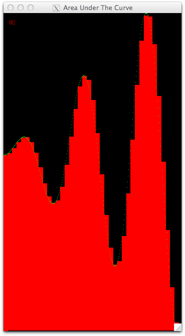
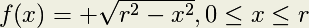
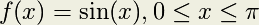

The Code, Platforms, and Executing a Serial Version¶
Parallel Computing Platforms¶
The code we provide will compile and run with the following combinations of platforms. Any computer you use will need linux or unix with X11 (this is how we coded the visualizations). We have examples that use OpenMP alone, MPI alone, and a combination of MPI and OpenMP (sometimes called hybrid solutions).
The OpenMP examples will run on:
- A single multicore machine with an OpenMP-compatible C compiler
The MPI examples will run on:
- A single multicore computer or a cluster with MPICH installed and MPE installed (MPE is a visualization library for MPI based on X11 that comes with MPICH).
- A single multicore computer or a cluster with OpenMPI installed and MPE installed (with OpenMPI, you need to install MPE separately).
The MPI + OpenMP examples will require a single computer or a cluster with MPI, MPE, and an OpenMP compiler all installed.
The Code and Scripts¶
You will need to set up the code. First get and uncompress the VisArea.tgz file like so (these are linux commands):
tar -zxvf VisArea.tgz
ls -R -1
You should get some output like this:
.:
area
Makefile
./area:
area.c
area.c-mpi
area.h
colors.h
makeExecutable
Makefile
MPEarea.h
MPEcolors.h
Readme
run_mpi_chunksOfOne
run_mpi_chunksOfOne_openmp_equalChunks
run_mpi_equalChunks
run_mpi-openmp_chunksOfOneDynamic
run_mpi-openmp_chunksOfOneStatic
run_mpi-openmp_equalChunks
run_openmp_chunksOfOneDynamic
run_openmp_chunksOfOneStatic
run_openmp_equalChunks
run_serial
structs.h
Xarea.h
Note that there is a directory called area with its own Makefile and a global Makefile. You will work inside the directory called area. From there, we have set up shell scripts to compile and run various types of data decomposition with different hardware and software compinations. Each of these scripts begins with the prefix run_.
Notes about building on your installation¶
You might need to change the path to your X libraries. The place to do that is to edit the LDFLAGS in the the global Makefile (the one outside of the source code folder called area). You can try the first script shown below to test whether this will be a problem for you.
Building and Executing the Serial Version¶
You will need to be logged directly into the computer with the code, MPI, OpenMP, and X11 installed in order to see the X11 visualization that the code produces. You can also have an X11 client installed on a remote machine in which you use ``ssh -X `` to remotely log in to the server with the parallel software and this code installed.
Let’s start by trying an example that runs serially, or sequentially, without any parallelization. The script for this is called run_serial. You can compile the code and run it like this.
cd area
./run_serial
We will run all the rest of the example scripts from the area directory.
An X window displaying how the code executes the computation of the area of each rectangle should appear. When it completes, it should look like this:
The default curve we use is shown (see below for some more options). Each rectangle is drawn with a single color because one processing unit computed each rectangle, one after another. In other examples, colors will be used to show which processing unit computed which rectangle.
To close the window, you can type the ‘q’ key if the focus is still in the window. Otherwise, place focus back in the terminal window where you ran the script and type control-c.
We chose some default settings, which you can change to see what happens. For all scripts, you can use the -? option as follows to see what your options are:
./run_serial -?
You should get some output like this:
./run_serial: illegal option -- ?
usage: ./run_serial options
This script runs the visualization of computing the area under the curve serially.
OPTIONS:
-t Throttle time in microseconds
-n Number of rectangles
-f Function kind (1, 2 or 3, default if not specified)
-r Righthand boundary of the curve
The throttle time will change how quickly the rectangles will be displayed. These visualizations are designed to be ‘played’ so that you can see what assignments were made. You can change this time to help you see what is happening.
You can change the number of rectangles under the curve. Making this smaller or larger might help you envision what is happening in each of the situations we describe in the next few sections. For eaxmple, if you try this:
./run_serial -n 12
You can see how this small amount of rectangles does not approximate this curve very well.
However, if you use too many rectangles, it is very hard to see each one. Really high numbers of rectangles will mean that it takes less than one pixel to draw them; this is a situation you want to avoid. About 60 or so is likely the most you should opt for with -n.
The -f option will let you pick other curves to display.
- Option 1 is the straight-line function
 .
. - Option 2 is the positive quarter circle, 
- Option 3 is half the period of the sine function, 
- Option 4, the default in these example scripts, is the curve

The -r option can only be changed with the -f option 1 or 4. With -f 1, values between 400 and 1000 make the most sense to use for -r (any larger and the window gets too large; any smaller and the window is too small and hard to see.) With -f 4, the default shown in these scripts is 350 for the right-hand value of x in the function. We recommend going now higher than 600 or so, unless you have a really large monitor.
Now that you know the options, let’s you on and try parallel versions of this code.

Table Of Contents
Previous topic
The Numerical Integration Problem